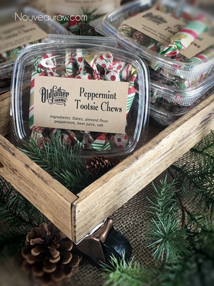
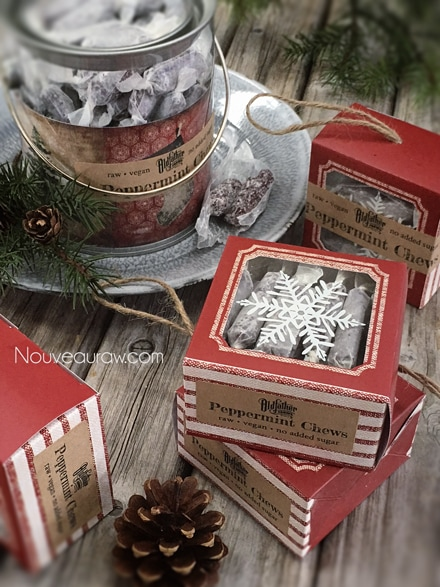

Peppermint Tootsie Chews

~ raw, vegan, gluten-free ~
Learning to create homemade sweet treats can be very rewarding. I know, I know, it is much easier to just grab a bag of candy as you navigate your buggy down the grocery store aisle. But I encourage you, learning how to make your food and your treats from scratch are well worth the effort.
There is a saying by Robin Sharma, “Change is hard at first, messy in the middle and so gorgeous at the end.” I liken this saying to making these peppermint chews. Rather than purchasing a bag of candy, I want you to grab some Medjool dates, beets, peppermint, and salt. That is all that is needed to make this for yourself. So this is step one in making a change.
Once home, with the groceries, unloaded, it is time to rev up the food processor, whip out the spatulas, and get busy. Sure, it’s going to get a little messy… date paste is like that. But it is “finger lick’n good”… I can promise you that.
Before you know it, the candies are made, dehydrated, and packaged… you sit back and admire your work… the end result is gorgeous. :) Just to recap, “Change is hard at first, messy in the middle and gorgeous at the end.” I am proud of you for taking the first step in changing. Allow me to encourage and support you, it’s a lot more fun to have someone along with you on this journey.
And in the end, you will inspire others with your gorgeous, treats that will cause them to change how they look at healthy food. It’s a ripple effect and it starts… here!
If you quickly scanned this page and feel intimidated by the “preparation” section… please don’t be. I always do my best to share every tidbit of information that will help make your job easier. In short, I could just say; blend, pipe, dry, and eat… because really, that is all that there is to making this candy.
A helpful tip when creating these candies is to use “dry” date paste. I know that sounds a bit confusing so let me explain. When creating the date paste, use the least amount of water needed when getting it to that creamy smooth texture. I provided a link below on how I make my date paste, please review it.
For the almond flour, I used fine almond flour, not ground almonds. If you just use ground almonds the candies can turn out grainy. One way to achieve fine almond flour is too dry the almond pulp after making almond milk. Grind this to a fine powder once dried. If you are not able to do this and 100% raw isn’t your top priority, you can purchase almond flour.
Have fun making these candies. Be sure to leave a comment below. blessings, amie sue
Yields 36 (2” candies)
- 2 cups date paste
- 3/4 cup fine almond flour
- 1/4 cup beet juice
- 1 tsp peppermint extract
- 1/4 tsp Himalayan pink salt
Preparation:
Create the candy batter:
- Remove the pits from the dates as you put them in the measuring cup.
- Be sure to inspect each date as you tear it in half to remove the pit. Mold and insect eggs can infect dried dates. I don’t mean to gross you out, you just need to be made aware of this.
- Place the date paste, almond flour, beet juice, peppermint, and salt in the food processor fitted with the “S” blade. Process until it turns into a creamy paste.
Fill the piping bag:
- For piping tools that I use, click (here). I used the piping tip Ateco #808.
- While holding the bag with one hand, fold down the top with the other hand to form a cuff over your hand.
- Fill the bag 1/2 full. If you overfill the bag, the excess batter may squeeze out the wrong end not to mention that you will have less control of the bag when piping.
- Close the bag by unfolding the cuff and twisting the bag closed. This forces the batter down into the bag.
- “Burping” the bag: Make sure you release any air trapped in the bag by squeezing some of the batter out of the tip into the bowl. This is called “burping” the bag.
Piping:
- Click (here) to view some photos of how I piped these.
- Hold the piping bag tip about 1/4″ above the reflex sheet, at a 22.5-degree angle, and slowly guide the lines of batter down the sheet. Don’t hold it too high or you will create a squiggly line.
- Keep constant pressure on the piping bag as you squeeze out the paste. This will ensure an even thickness of the line.
- After each completed line of batter, stop and retwist the piping bag, working all paste towards the tip. This will eliminate air bubbles in the bag and give you a solid grip.
- Remember: It doesn’t have to be perfect. Just have fun and if you make a mistake, scoop it up, place back in the bag and do it again.
Dehydrate & store:
- Place the tray in the dehydrator and dry at 145 degrees (F) for 1 hour, then reduce to 115 degrees (F) for 16-24 hours.
- Once they are dry enough, cut them into the desired lengths.
- Wrap each piece in wax paper and decorative tissue paper if you wish.
- Store in a mason jar with a lid. I keep mine in the fridge for freshness, but not necessary.
- Why do I start the dehydrator at 145 degrees (F)? Click (here) to learn the reason behind this.
- When working with fresh ingredients it is important to taste test as you build a recipe. Learn why (here).
Substitutions:
One of the greatest joys when creating raw food recipes is experimenting with different ingredients… a practice that I highly encourage. Daily I get questions regarding substitutions. Of course, we all might have different dietary needs and tastes which could necessitate altering a recipe. I love to share with you what I create for myself, my husband, friends, and family. I spend a lot of time selecting the right ingredients with a particular goal in mind, looking to build a certain flavor and texture.
So as you experiment with substitutions, remember they are what they sound like, they are substitutes for the preferred item. Generally, they are not going to behave, taste, or have the same texture as the suggested ingredient. Some may work, and others may not and I can’t promise what the results will be unless I’ve tried them myself. So have fun, don’t be afraid, and remember, substituting is how I discovered many of my unique dishes.
Packing Ideas:
For packaging ideas, I used a hinged clamshell that you can find online or at any local restaurant store. Twelve candies fit perfectly in them. To wrap the candies, I used brown wax paper (not parchment, too stiff) and tissue paper. I have wrapped over 1,000 pieces of candy this holiday and I have learned what works the best… trust me, I am a certified wrapper now. lol
As far as tissue paper goes, you can use any color or pattern but stay away from full metallic foil papers. They don’t twist close well at all. Some tissue papers have metallic in them (as you see below), these work just fine. When using tissue paper, you will want to use a piece of wax paper on the inside of it so the candy doesn’t stick. The tissue paper is just decorative.
This is what they look like as little unwrapped candies.
Just sharing a packaging idea. I love using these pillow boxes.
You can find them on my Amazon store (
solid or
clear). You can also check
your local craft stores.
Here are some other fun ideas.

© AmieSue.com